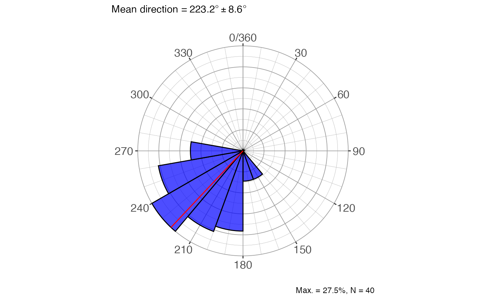
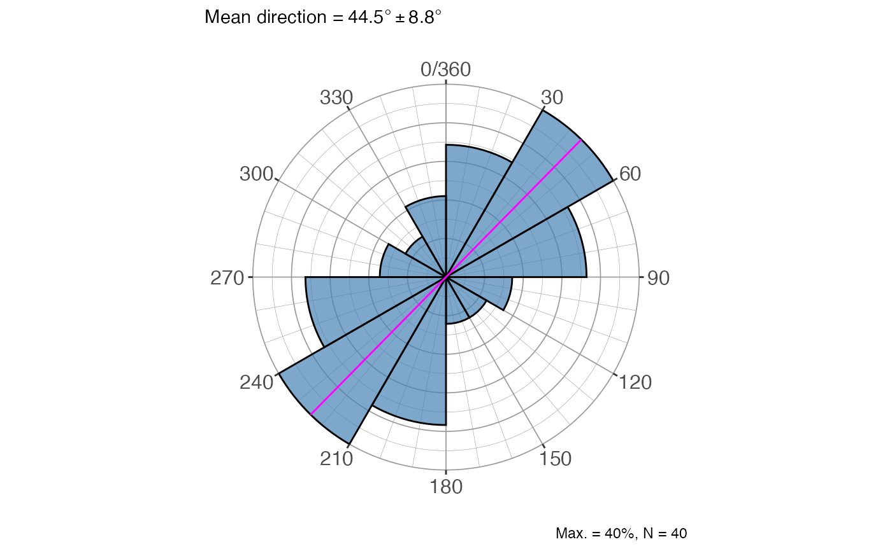
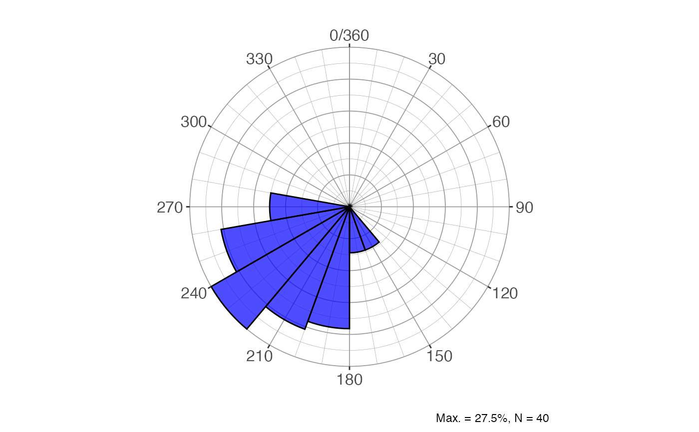

Draws a rose diagram (circular histogram) for a sample of angular measurements using ggplot2. Petal lengths are scaled to the square root of frequency so that petal area is proportional to count, reducing the visual dominance of the most frequent bin. Supports both vectorial data (0°–360°) and axial data (0°–180°), and optionally overlays the mean direction.
Usage
rose_diag_circ(
x,
data = NULL,
width = 20,
dir = 1,
conf.level = 0.95,
alpha = 0.7,
fill.col = "blue",
mean.col = "red",
show.mean = T
)Arguments
- x
Numeric vector of angles in degrees, or an unquoted column name when
datais supplied.- data
A data frame (or tibble) containing the column referenced by
x. DefaultNULL(usexdirectly as a vector).- width
Numeric. Bin width in degrees. Default
20.- dir
Integer. Data type:
1for vectorial data (full 0°–360° range, default);0for axial data (0°–180° range, e.g. strike or foliation— each measurement is mirrored to produce a symmetric bimodal diagram).- conf.level
Numeric. Confidence level passed to
dir_stats_circ()for the mean-direction confidence cone shown in the subtitle. Default0.95.- alpha
Numeric. Transparency of the petal fill (0 = fully transparent, 1 = fully opaque). Default
0.7.- fill.col
Character. Fill colour of the petals. Default
"blue".- mean.col
Character. Colour of the mean-direction line(s). Default
"red".- show.mean
Logical. If
TRUE(default) a radial line is drawn at the mean direction and the mean ± confidence cone is shown in the plot subtitle; ifFALSEneither is shown.
Value
A ggplot object containing the rose diagram. The plot caption
reports the maximum bin percentage and the sample size; the subtitle (when
show.mean = TRUE) reports the mean direction and its confidence cone in
degrees.
References
Fisher, N. I. (1993). Statistical analysis of circular data. Cambridge University Press.
Davis, J. C. (2002). Statistics and data analysis in geology (3rd ed). J. Wiley.
Swan, A. R. H., & Sandilands, M. (1995). Introduction to geological data analysis. Blackwell Science.
See also
Other directional statistics:
dir_aov_spher_ax(),
dir_aov_spher_vec(),
dir_stats_circ(),
dir_stats_spher(),
rose_diag_spher()
Examples
angles = c(255, 239, 222, 231, 199, 271, 222, 274, 228, 246,
177, 199, 257, 201, 237, 209, 216, 180, 182, 250,
219, 196, 197, 246, 218, 235, 232, 243, 232, 180,
231, 254, 242, 149, 212, 210, 230, 205, 220, 268)
# Vectorial rose diagram with default settings
rose_diag_circ(angles)

# Axial data (strikes), wider bins, custom colours
rose_diag_circ(angles, dir = 0, width = 30,
fill.col = "steelblue", mean.col = "magenta")

# From a data frame column, no mean line
df <- data.frame(azi = angles)
rose_diag_circ(azi, data = df, show.mean = FALSE)
